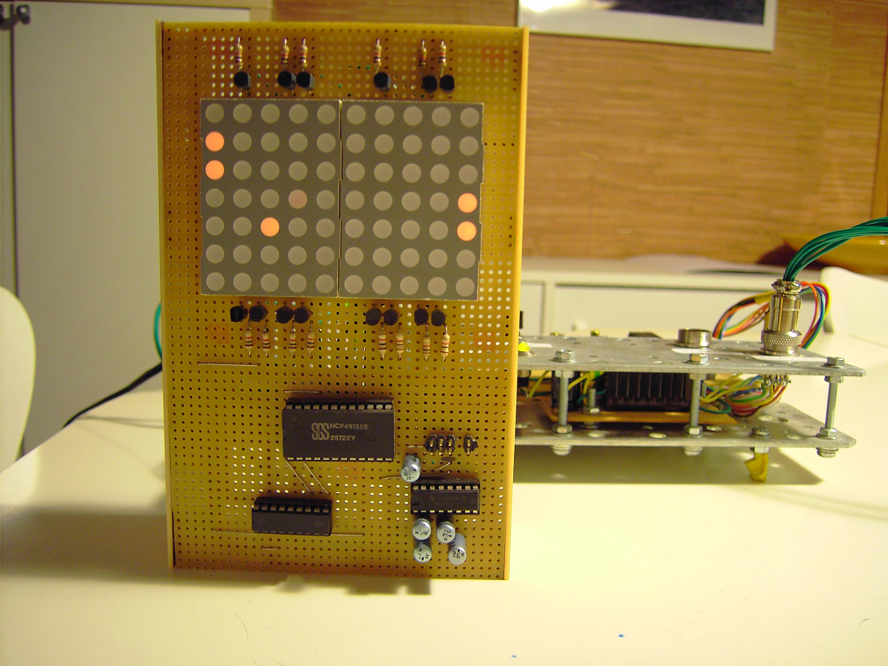

Ecran graphique pour le A6
L'écran aplhanumérique qui équipe le A6 n'est pas capable d'afficher des images ou même des motifs.
Dans le but de jouer au fameux jeu "Pong" sur le A6, j'ai dû fabriquer une sorte de minuscule écran graphique permettant d'afficher des images avec une résolution Full HD de 10 pixels par 7 pixels...
Cet écran est relié à l'unité centrale via la liaison série 9600 bauds. Cela assure une vitesse de rafraîchissement d'environ 85 images par seconde, ce qui est largement suffisant pour rendre crédible les "animations".
Voici deux photos montrant la réalisation de l'écran. Comme pour son homologue alphanumérique, les contre-poids sont réalisés avec des piles 9V usagées...
{kind=link}
{kind=link}
Description du fonctionnement
L'écran est composé de deux matrices d'affichage à LED qui font chacune 5 pixels de large sur 7 pixels de haut. L'affichage fonctionne selon le même principe que celui des écrans que nous utilisons quotidiennement. En voici une brève description :
le choix d'une demi-ligne de 5 pixels est assuré par un multiplexeur, aidé de transistors pour fournir la puissance nécessaire. Le microcontrôleur (un PIC16F628 de Microchip) sélectionne une demi-ligne en donnant son code au multiplexeur, affiche les 5 pixels correspondants, puis déselectionne la demi-ligne et passe à la suivante. Grâce à une vitesse d'affichage relativement élevée et à la persistance rétinienne, notre oeil voit l'image dans son intégralité.
Voici un bref aperçu des composants de l'écran :
{kind=link}
Applications
Voici maintenant l'écran en action avec une énième version de Pong jouable à deux... 
{kind=link}
... ou sinon affichant une simulation du Jeu de la vie, l'automate cellulaire créé par John Conway.
Retour au menu des projets{kind=link}